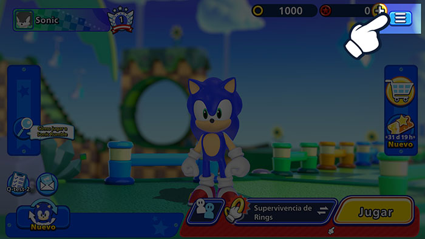
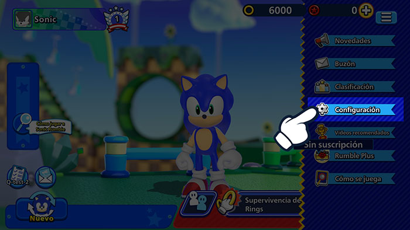
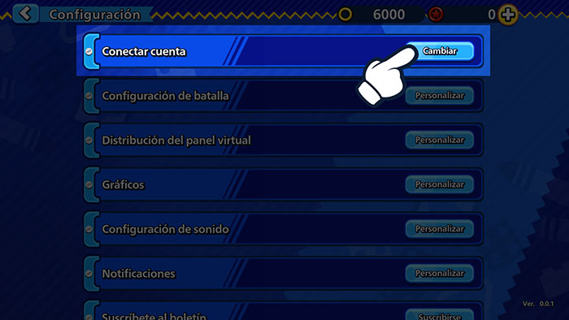
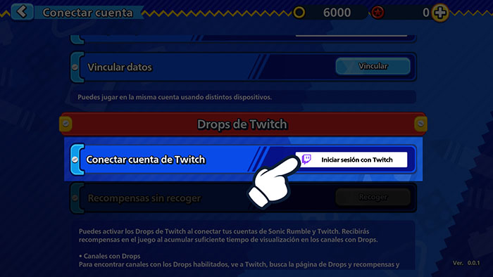
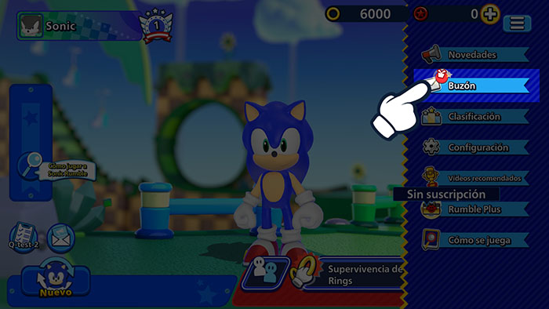
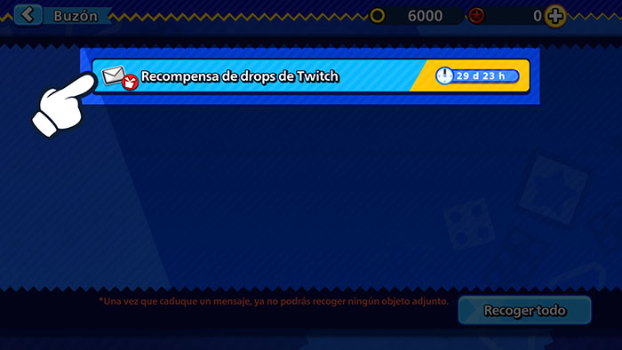

Drops de Twitch¡Mira transmisiones en vivo y consigue recompensas para el juego!
Drops de Twitch¡Mira transmisiones en vivo y consigue recompensas para el juego!
¡Vincula ya tu cuenta de Twitch!
Cómo vincular tu cuenta
1Haz clic en el botón Menú en Sonic Rumble.

2Ve a Configuración.

3Haz clic en Conectar cuenta.

4Selecciona Drops de Twitch y elige Iniciar sesión con Twitch para iniciar sesión en tu cuenta de Twitch.

5Esto vinculará tu cuenta de Twitch con tu cuenta de Sonic Rumble.
Cómo aceptar recompensas
1Haz clic en el botón Menú en Sonic Rumble.

2Ve a tu buzón para ver tus recompensas.

*Pueden producirse problemas al recibir recompensas si se envían a tu buzón durante un mantenimiento.
Si experimentas este problema, ve a Menú > Configuración > Conectar cuenta > Drops de Twitch y haz clic en el botón Recoger para reenviar las recompensas a tu buzón.
Preguntas frecuentes
- Q¿Qué son los Drops de Twitch?
- AUn tipo de evento que te permite obtener recompensas para el juego tan solo por ver transmisiones en vivo en Twitch.
Para participar, tan solo tienes que vincular tu cuenta de Sonic Rumble con tu cuenta de Twitch. - Q¿Cómo recibo las recompensas?
- AActiva la función Drops de Twitch y mira transmisiones en vivo de Sonic Rumble que cumplan las condiciones para llenar tu medidor de Drops. Recibirás recompensas cuando el medidor se llene.
- Q¿Cómo puedo saber si estoy participando en eventos de Drops de Twitch?
- AAccede a la página de inventario de Twitch aquí para ver todos los eventos de Drops de Twitch en los que participas y las recompensas que has recibido.
- Q¿Cuánto tiempo tardan en llegar las recompensas de Drops?
- ALas recompensas se entregan en tu buzón del juego en 24 horas.
Si deseas desvincular tu cuenta después de recibir tus recompensas, recuerda recibir las recompensas en tu cuenta de Sonic Rumble antes de hacerlo. - QSi tengo varias cuentas de Sonic Rumble, ¿puedo reclamar recompensas para todas ellas?
- ALas recompensas de Drops de Twitch solo se pueden reclamar una vez. Cada cuenta de Twitch solo puede vincularse a una cuenta de Sonic Rumble a la vez.
El mismo tipo de recompensa no se puede recibir más de una vez por cada cuenta de Sonic Rumble y cuenta de Twitch.